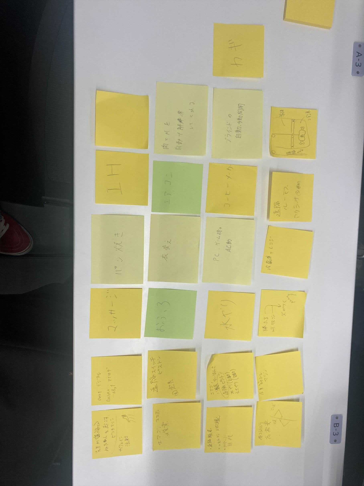

課題2
IOTとは？
IOTとは、"インターネットへの接続"を活用した取り組みの総称を言います。現代では、あらゆるものがインターネットに接続されており、
遠隔での温度調節が可能なエアコンや自動掃除ロボットなどが具体例として挙げることができます。
実験の様子
IOTを実際に体験する為に、アプリでQRコードを読み込んで電気のON/OFFを切り替える実験をしました!
こちらから実際の様子を見ることができます。
IOTを使ってどんなサービスができそうか？
IOTを使って、どのようなサービスができそうかを班のみんなと考えてみました!以下の写真が挙がったアイデアになります。
